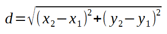

Ejercicio 1
Escriba un programa que pida el radio y las coordenadas del centro de una circunferencia y las coordenadas de un punto y que indique si el punto está sobre la circunferencia, dentro o fuera de ella.
- Se recuerda que un punto está fuera, dentro o sobre la circuferencia según sea la relación entre el radio y la distancia entre el punto y el centro de la circunferencia.

- Se recuerda que la distancia entre dos puntos A(x1, y1) y B(x2, y2) se calcula mediante la fórmula:

Ejemplos
PUNTO Y CIRCUNFERENCIA Escriba la coordenada X del centro de la circunferencia: 30 Escriba la coordenada Y del centro de la circunferencia: 40 Escriba el radio de la circunferencia: 50 Escriba la coordenada X del punto: 0 Escriba la coordenada Y del punto: 0 El punto está sobre la circunferencia. Programa terminado
PUNTO Y CIRCUNFERENCIA Escriba la coordenada X del centro de la circunferencia: 10 Escriba la coordenada Y del centro de la circunferencia: 20 Escriba el radio de la circunferencia: 5.5 Escriba la coordenada X del punto: -14.5 Escriba la coordenada Y del punto: 13 El punto está fuera de la la circunferencia. Programa terminado
PUNTO Y CIRCUNFERENCIA Escriba la coordenada X del centro de la circunferencia: -10 Escriba la coordenada Y del centro de la circunferencia: 6.5 Escriba el radio de la circunferencia: 20 Escriba la coordenada X del punto: 5 Escriba la coordenada Y del punto: 15 El punto está dentro de la la circunferencia. Programa terminado